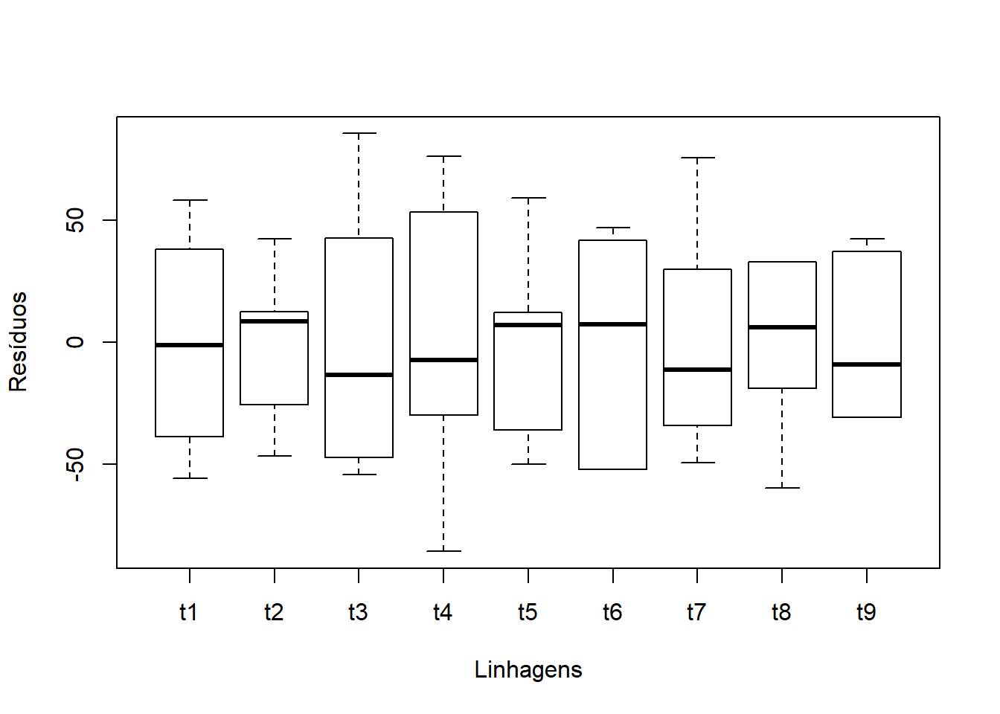
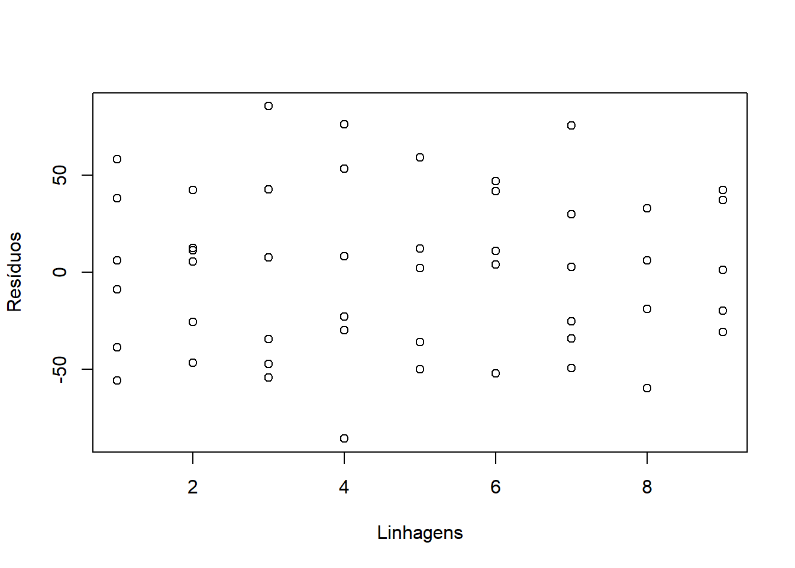
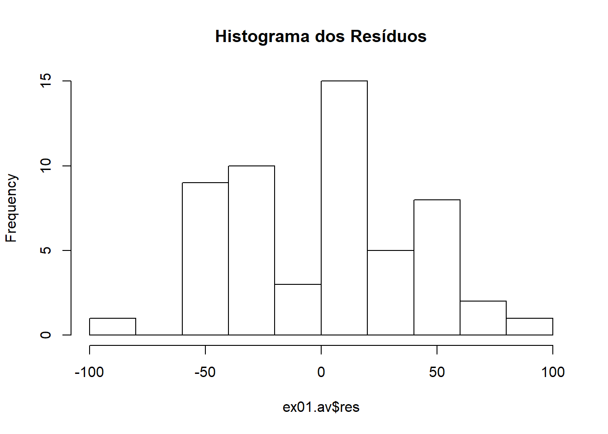
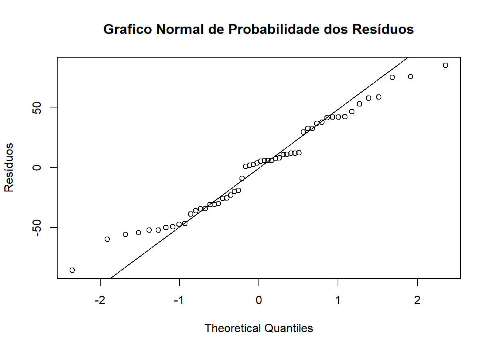
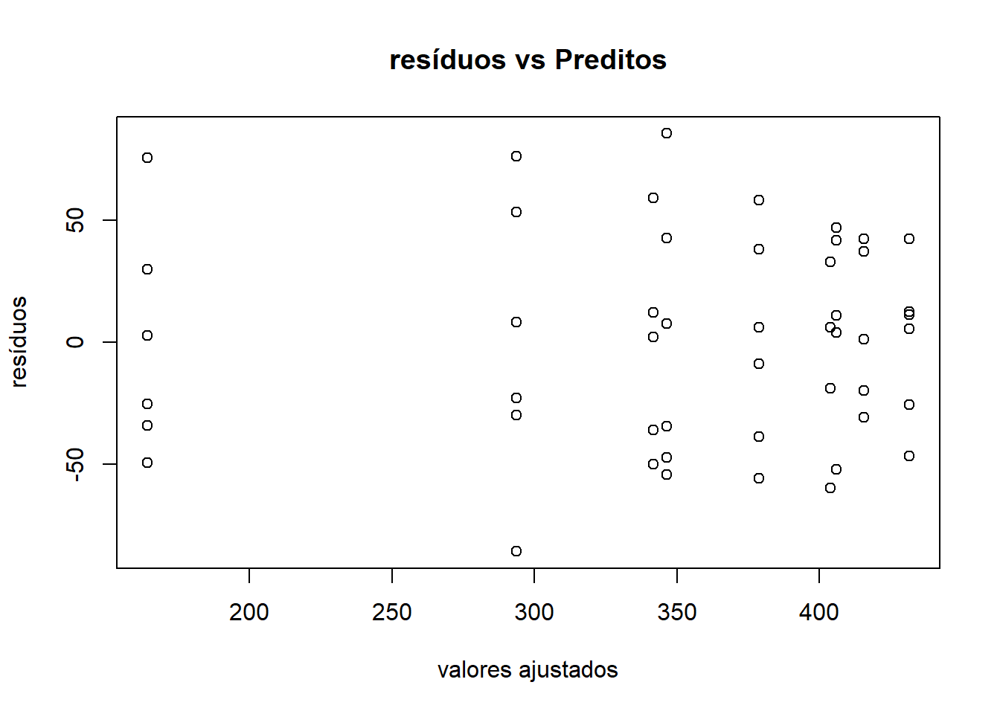
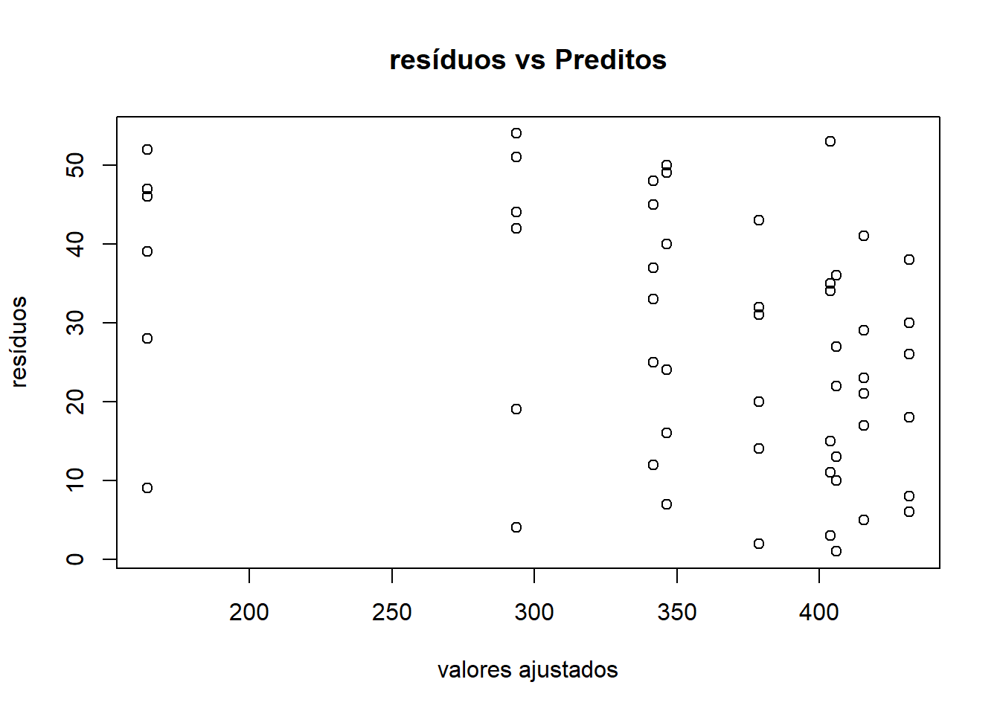
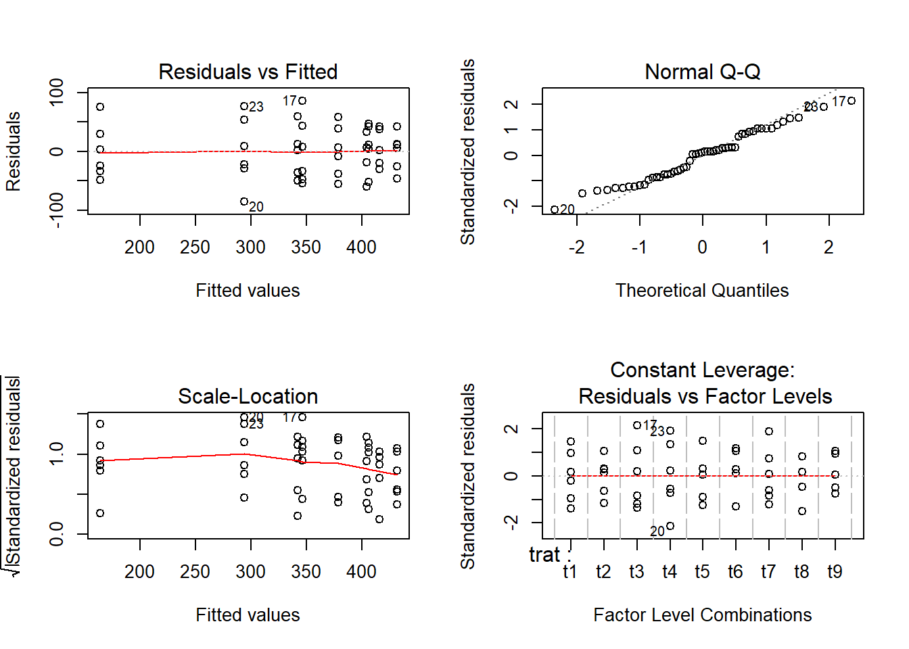
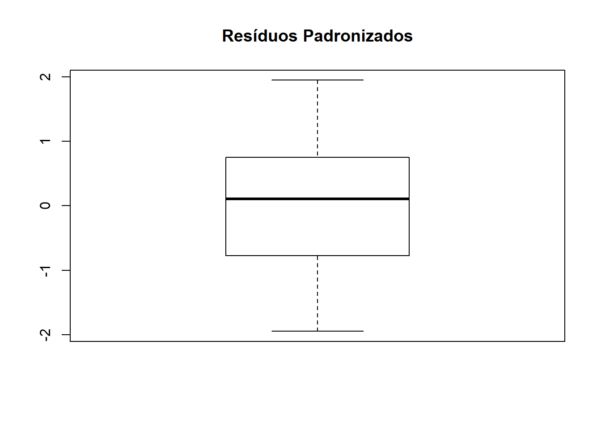
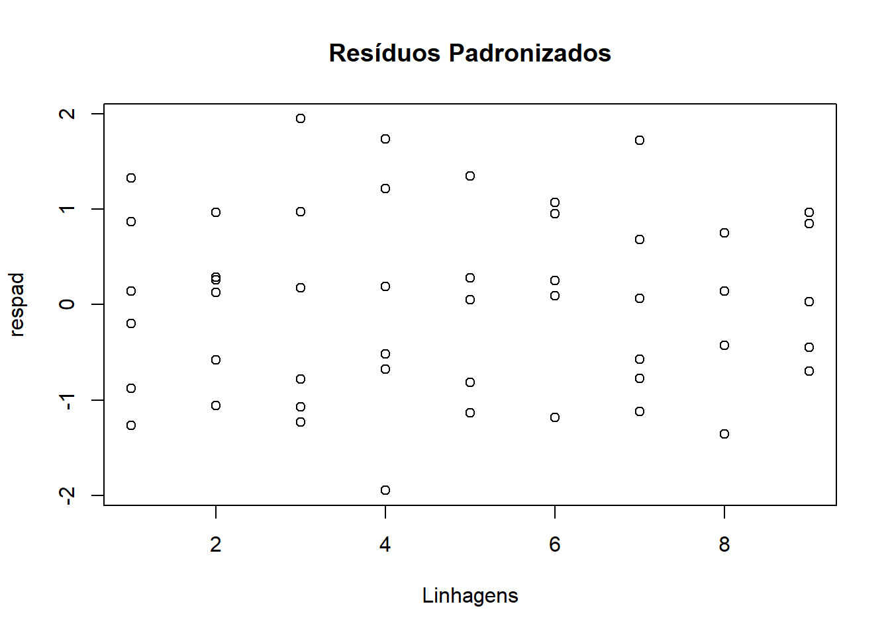
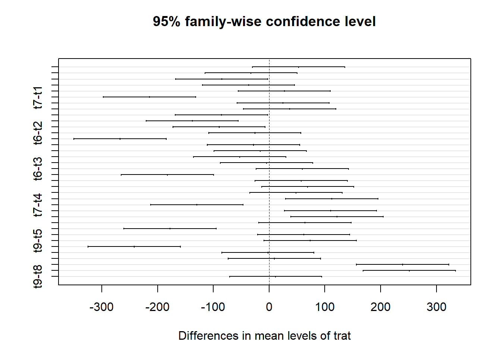

Dados como exemplo
## trat resp
## t1 : 6 Min. :115.0
## t2 : 6 1st Qu.:307.5
## t3 : 6 Median :377.5
## t4 : 6 Mean :353.5
## t5 : 6 3rd Qu.:417.0
## t6 : 6 Max. :474.0
## (Other):18## t1 t2 t3 t4 t5 t6 t7 t8
## 378.6667 431.5000 346.3333 293.6667 341.8333 406.0000 164.1667 403.8333
## t9
## 415.6667## t1 t2 t3 t4 t5 t6 t7 t8
## 1916.267 987.500 3117.867 3494.667 1513.767 1903.600 2173.367 1242.167
## t9
## 1091.067Teste para saber se há diferença entre os tratamentos.
\[H_0: \mu_1 = \mu_2 = ... = \mu_i\] \[H_1: \mu_i \neq \mu_j\] #### Mesma coisa que:
\[H_0: \text{Diferença entre tratamentos não é significativa}\] \[H_0: \text{Diferença entre tratamentos é significativa}\]
## Df Sum Sq Mean Sq F value Pr(>F)
## trat 8 332918 41615 21.48 5.44e-13 ***
## Residuals 45 87201 1938
## ---
## Signif. codes: 0 '***' 0.001 '**' 0.01 '*' 0.05 '.' 0.1 ' ' 1## Analysis of Variance Table
##
## Response: resp
## Df Sum Sq Mean Sq F value Pr(>F)
## trat 8 332918 41615 21.475 5.445e-13 ***
## Residuals 45 87201 1938
## ---
## Signif. codes: 0 '***' 0.001 '**' 0.01 '*' 0.05 '.' 0.1 ' ' 1\[H_0: \sigma^2_1 = \sigma^2_2 = ... = \sigma^2_i \] \[H_1: \sigma^2_i \neq \sigma^2_{i'} \text{ para pelo menos um } i \neq i'\]

####Conferindo com Scatterplot Tratamentos x Resíduos

##
## Bartlett test of homogeneity of variances
##
## data: ex01.av$res and ex01$trat
## Bartlett's K-squared = 3.6738, df = 8, p-value = 0.8853\[H_0: \text{erros possuem distribuição normal}\] \[H_1: \text{erros não possuem distribuição normal}\] #### Conferindo normalidade com histograma dos resíduos

##
## The decimal point is 1 digit(s) to the right of the |
##
## -8 | 6
## -6 | 0
## -4 | 64220977
## -2 | 96441106530
## -0 | 99
## 0 | 123466668812222
## 2 | 03378
## 4 | 22337389
## 6 | 66
## 8 | 6qqnorm(ex01.av$res,ylab="Resíduos", main=NULL)
qqline(ex01.av$res)
title("Grafico Normal de Probabilidade dos Resíduos")
##
## Shapiro-Wilk normality test
##
## data: ex01.av$res
## W = 0.97159, p-value = 0.2263plot(ex01.av$fit, ex01.av$res, xlab="valores ajustados", ylab="resíduos")
title("resíduos vs Preditos")
plot(ex01.av$fit, order(ex01.av$res), xlab="valores ajustados", ylab="resíduos")
title("resíduos vs Preditos")

## [1] "Df" "Sum Sq" "Mean Sq" "F value" "Pr(>F)"s2 <- anova(ex01.av)$Mean[2] #### estimativa da variância
res <- ex01.av$res #### extraindo resíduos
respad <- (res/sqrt(s2)) #### resíduos padronizados
boxplot(respad)
title("Resíduos Padronizados" )

\[H_0: \mu_i = \mu_j\] \[H_1: \mu_i \neq \mu_j\] #### Mesma coisa que
\[H_0: \text{o constraste não é significativo}\] \[H_1: \text{o constraste é significativo}\]
Se 0 não estiver incluído no intervalo, rejeita-se a hipóte-se nula.
## Tukey multiple comparisons of means
## 95% family-wise confidence level
##
## Fit: aov(formula = resp ~ trat, data = ex01)
##
## $trat
## diff lwr upr p adj
## t2-t1 52.833333 -29.947633 135.614299 0.4998060
## t3-t1 -32.333333 -115.114299 50.447633 0.9342210
## t4-t1 -85.000000 -167.780966 -2.219034 0.0401018
## t5-t1 -36.833333 -119.614299 45.947633 0.8721075
## t6-t1 27.333333 -55.447633 110.114299 0.9749062
## t7-t1 -214.500000 -297.280966 -131.719034 0.0000000
## t8-t1 25.166667 -57.614299 107.947633 0.9849417
## t9-t1 37.000000 -45.780966 119.780966 0.8693183
## t3-t2 -85.166667 -167.947633 -2.385701 0.0394343
## t4-t2 -137.833333 -220.614299 -55.052367 0.0000730
## t5-t2 -89.666667 -172.447633 -6.885701 0.0247945
## t6-t2 -25.500000 -108.280966 57.280966 0.9836416
## t7-t2 -267.333333 -350.114299 -184.552367 0.0000000
## t8-t2 -27.666667 -110.447633 55.114299 0.9730043
## t9-t2 -15.833333 -98.614299 66.947633 0.9993743
## t4-t3 -52.666667 -135.447633 30.114299 0.5040619
## t5-t3 -4.500000 -87.280966 78.280966 1.0000000
## t6-t3 59.666667 -23.114299 142.447633 0.3369467
## t7-t3 -182.166667 -264.947633 -99.385701 0.0000002
## t8-t3 57.500000 -25.280966 140.280966 0.3855262
## t9-t3 69.333333 -13.447633 152.114299 0.1671352
## t5-t4 48.166667 -34.614299 130.947633 0.6203900
## t6-t4 112.333333 29.552367 195.114299 0.0018566
## t7-t4 -129.500000 -212.280966 -46.719034 0.0002153
## t8-t4 110.166667 27.385701 192.947633 0.0024139
## t9-t4 122.000000 39.219034 204.780966 0.0005599
## t6-t5 64.166667 -18.614299 146.947633 0.2479215
## t7-t5 -177.666667 -260.447633 -94.885701 0.0000004
## t8-t5 62.000000 -20.780966 144.780966 0.2886707
## t9-t5 73.833333 -8.947633 156.614299 0.1146645
## t7-t6 -241.833333 -324.614299 -159.052367 0.0000000
## t8-t6 -2.166667 -84.947633 80.614299 1.0000000
## t9-t6 9.666667 -73.114299 92.447633 0.9999849
## t8-t7 239.666667 156.885701 322.447633 0.0000000
## t9-t7 251.500000 168.719034 334.280966 0.0000000
## t9-t8 11.833333 -70.947633 94.614299 0.9999286
####Observando contrastes específicos de interesse
\[y_1 = 1/4 L_1 + 1/4 L_2 + 1/4 L_3 + 1/4 L_4 - 1/5 L_5 - 1/5 L_6 - 1/5 L_7 - 1/5 L_8 - 1/5 L_9\] \[y_2 = 1L_1 + 1L_2 - 1L_3 - 1L_4\] \[y_3 = 1L_1 - 1L_2\] \[y_4 = 1L_3 - 1L_4\] \[y_5 = 1L_5 + 1L_6 + 1L_7 + 1L_8 - 4L_9\] \[y_6 = 1L_5 + 1L_6 - 1L_7 - 1L_8\] \[y_7 = 1L_5 - 1 L_6\] \[y_8 = 1L_7 - 1L_8\]
cont.ex01<-matrix(c(.25,.25,.25,.25,-.2,-.2,-.2,-.2,-.2,1,1,-1,-1,0,0,0,0,0,1,-1,0,0,0,0,0,0,0,0,0,1,-1,0,0,0,0,0,0,0,0,0,1,1,1,1,-4,0,0,0,0,1,1,-1,-1,0,0,0,0,0,1,-1,0,0,0,0,0,0,0,0,0,1,-1,0),nrow=9,ncol=8,byrow=F)
cont.ex01## [,1] [,2] [,3] [,4] [,5] [,6] [,7] [,8]
## [1,] 0.25 1 1 0 0 0 0 0
## [2,] 0.25 1 -1 0 0 0 0 0
## [3,] 0.25 -1 0 1 0 0 0 0
## [4,] 0.25 -1 0 -1 0 0 0 0
## [5,] -0.20 0 0 0 1 1 1 0
## [6,] -0.20 0 0 0 1 1 -1 0
## [7,] -0.20 0 0 0 1 -1 0 1
## [8,] -0.20 0 0 0 1 -1 0 -1
## [9,] -0.20 0 0 0 -4 0 0 0## Df Sum Sq Mean Sq F value Pr(>F)
## trat 8 332918 41615 21.475 5.44e-13 ***
## trat: y1 1 3517 3517 1.815 0.1846
## trat: y2 1 43435 43435 22.415 2.22e-05 ***
## trat: y3 1 8374 8374 4.321 0.0434 *
## trat: y4 1 8321 8321 4.294 0.0440 *
## trat: y5 1 36088 36088 18.623 8.62e-05 ***
## trat: y6 1 48510 48510 25.033 9.10e-06 ***
## trat: y7 1 12352 12352 6.374 0.0152 *
## trat: y8 1 172320 172320 88.925 3.16e-12 ***
## Residuals 45 87201 1938
## ---
## Signif. codes: 0 '***' 0.001 '**' 0.01 '*' 0.05 '.' 0.1 ' ' 1